Eclipse Communication Framework (ECF)
Eclipse Communication Framework (ECF)
How-To: Installation and Running of the ScribbleShare Tutorial
Last updated: April 10, 2006
This simple how-to is a step-by-step description of how to install and run
the ScribbleShare ECF tutorial plug-in. It should guide you to having a
working ECF demo in minutes.
The screenshots are based upon version 3.2 M5a of the Eclipse SDK and
version 0.7.5 of ECF.
Step 0: Prerequisites
Download and upack into the same directory the latest milestone or stable
release of Eclipse 3.2 and compatible versions of EMF, GEF, and ECF. Currently,
these consist of the following files for windows (similar files exist for Linux):
- eclipse-SDK-4.2Mfa-win32.zip
- emf-sdo-xsd-SDK-2.2.0M5.zip
- GEF-ALL-3.2M5.zip
- org.eclipse.ecf.skd-0.7.5.s20060314.zip
After installing Eclipse, EMF, GEF, and ECF, verify that they are all
available in your Eclipse environment:
- Bring up the "Help/About Eclipse Platform" dialog.
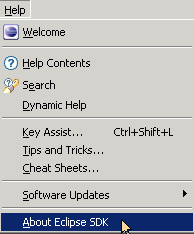
- Click on "Plug-in Details".
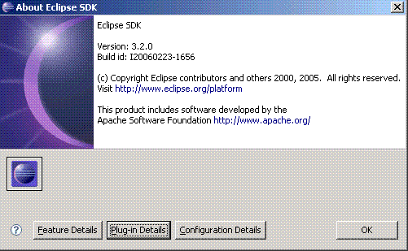
- Click the "Plug-in Id" column heading to order the plug-ins by that field.
Then, check that ECF set of plug-ins are present.
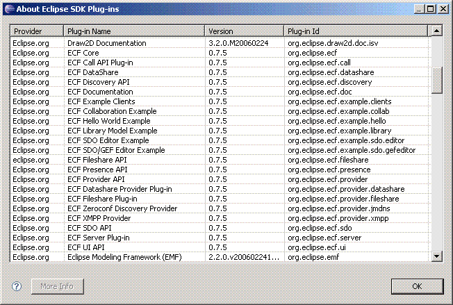
Step 1: Start Your ECF Test Server
- Start a command shell.
- CD to the Eclipse features directory.
- CD to org.eclipse.ecf.serverfeature_X.X.X\bin directory (X.X.X is the ecf version number).
- Run startserver.cmd for windows, startserver.sh for *.nix.
- The default settings, output to the command shell, are fine for now.
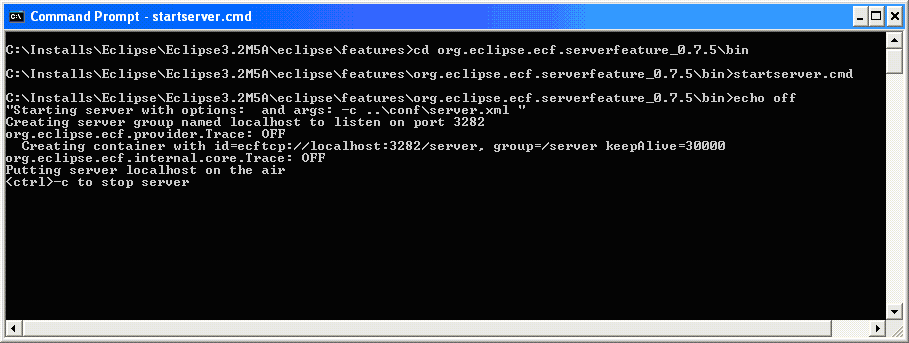
Step 2: Run Eclipse and import the ECF tutorial
- Execute the eclipse.exe of the Eclipse you intalled in Step 0
- Go the the main menu and click File->Import->CVS->Projects From CVS->Next:
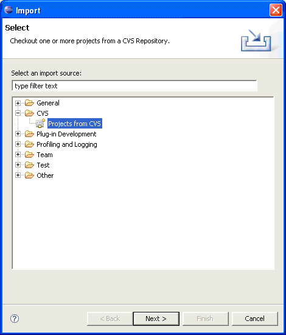Next"/>
- Enter the CVS repository info, Host = dev.eclipse.org, Path = /home/technology, User = Anonymous, Password= (leave blank)->Next:
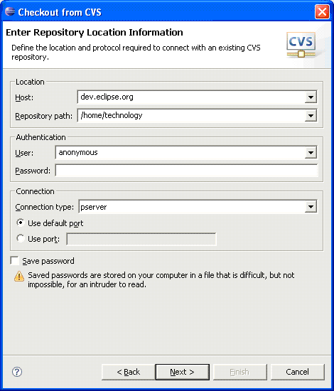Next"/>
- Select the radiobutton "Use Specified Module Name" and enter "org.eclipse.ecf/plugins/org.eclipse.ecf.tutorial"->Finish:
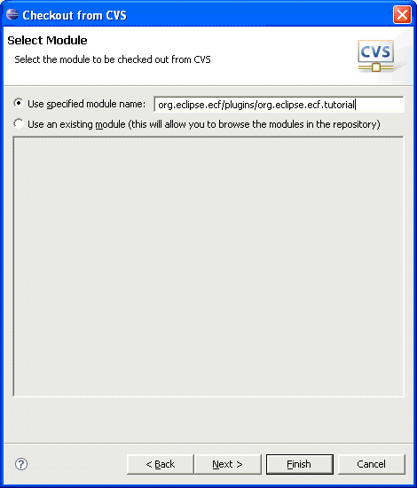
Step 3: Launch the tutorial plugin in another workbench
- Right click on the project org.eclipse.ecf.tutorial->Run->Run As->Run...->(Double-Click)Eclipse Application
- Change the launcher name to something meaningful like "ScribbleShare1"
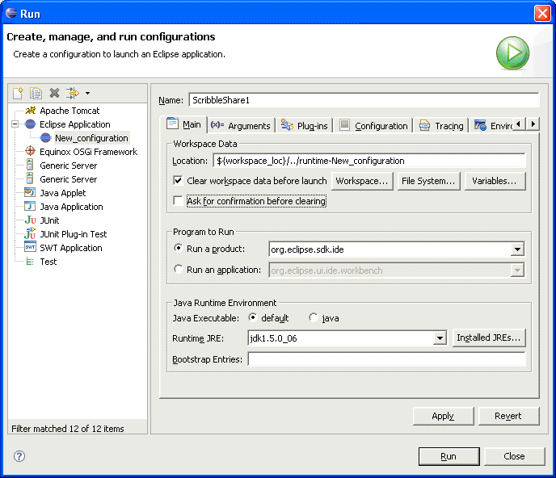
- Click the "Plug-ins" tab, make sure the radiobutton with "launch with all workspace & enabled plug-ins" is selected
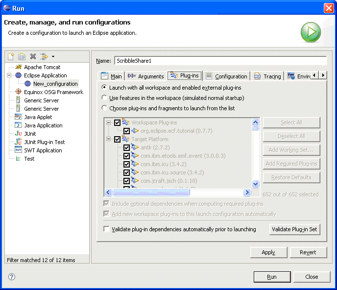
- Click Apply->Run
Step 4: Connect workspace to ECF server
- In the newly launched workbench, click the "ECF" menu item->Connect Workspace
- Choose "ECF Generic" Connection Protocol
- Type "ecftcp://localhost:3282/server" for Group ID, "user1" for nickname:
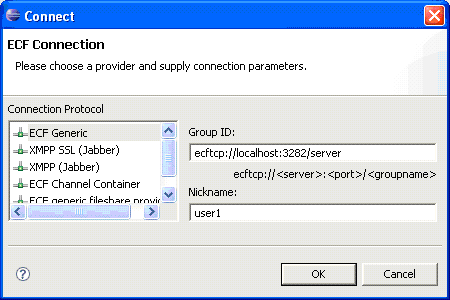
Step 5a: Open ScribbleShare View
- In the newly launched workbench, click the "ECF Tutorial" menu item->ECF Client:
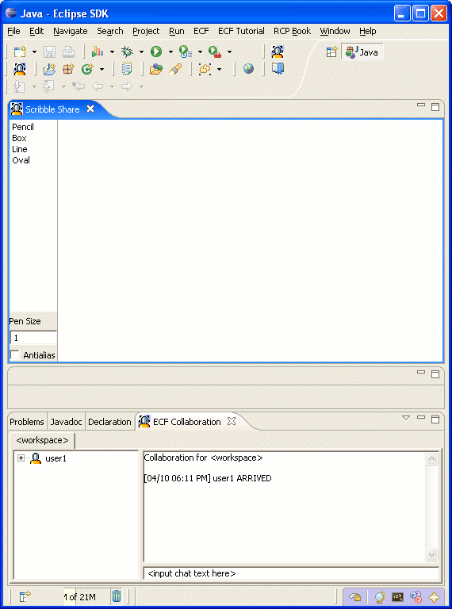
- Resize and move the workbench window so that it takes up less than half your screen
Step 5b: Open Another ScribbleShare View
- Go back to the original Eclipse workbench and repeat Steps 3 and 4. Be to enter a different "workspace data location" in the new launcher menu
- Resize and move the second workbench window so that it is beside the first one
- Go to the first workbench, draw some stuff in the ECF Client view
- You should observe drawing objects created in one workbench view appearing in the other:
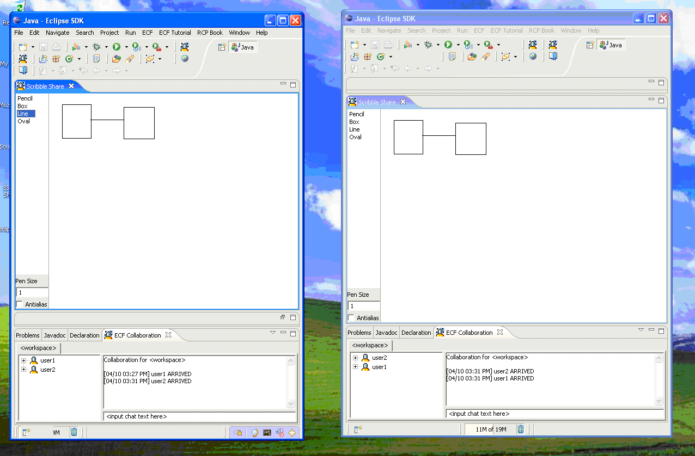
Step 6: Bonus Demo If Another Networked Computer Available
- Repeat Steps 0-2 if necessary for second computer.
- Edit ScribbleClient.java in ECF project imported from CVS.
- Change String TARGET_SERVER to point to the hostname of the first computer used in part 5 above, for example, "ecftcp://host1:3282/server":
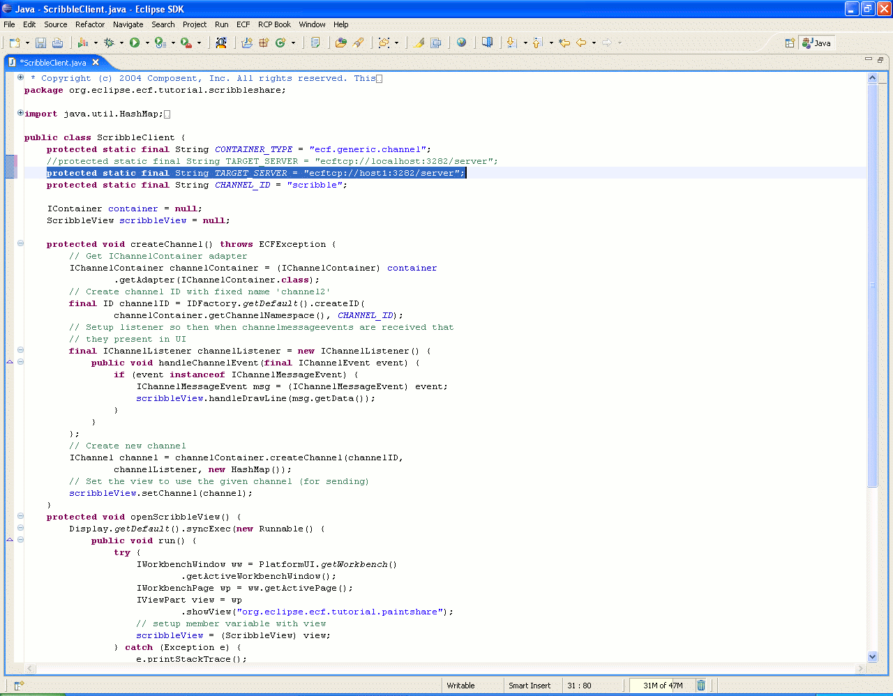
- Repeat Steps 3-5a on second computer. There's no need to start the ECF server on the second computer, you'll use the one already running on the first computer.
- You should now observe all workbench views synchronously displaying drawing objects.